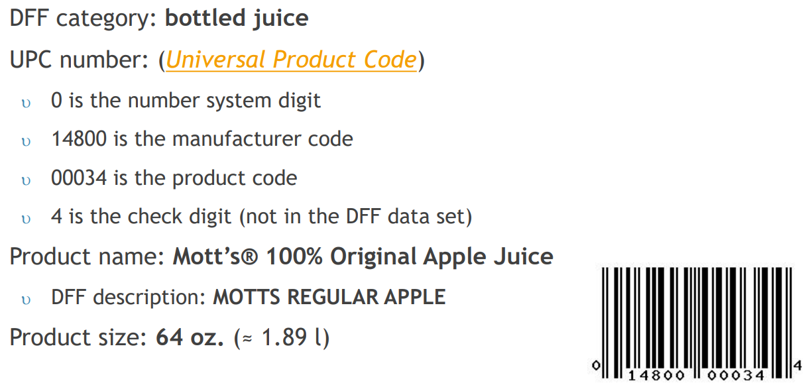
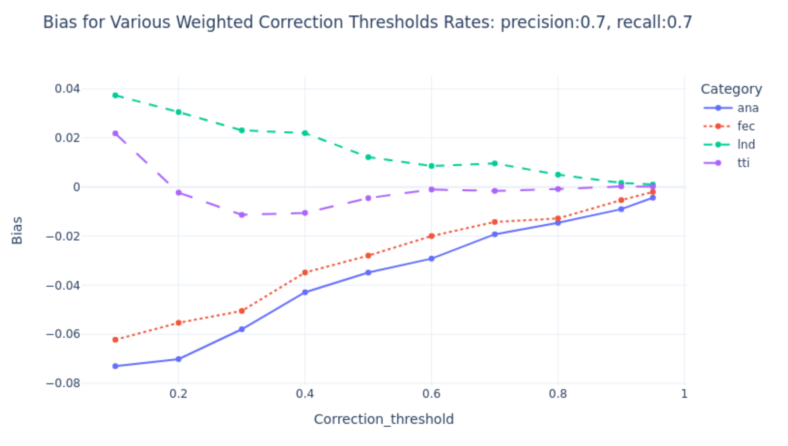
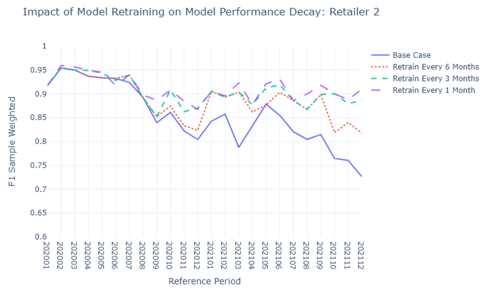

Method 4: Machine Learning classification method
Machine Learning (ML) can be a stable solution for classifying unique products when an NSO starts to use new data sources at scale. NSOs typically use supervised ML methods whereby a manually annotated dataset is used to train a classifier to predict all new unique products as part of recurrent classification. ML models can make mistakes however, thus NSOs that apply ML at scale also need to set up a manual validation process where some of the new products are validated after the ML model classifies them in order to help track model performance, mitigate mistakes for price index methods downstream, as well as to create additional training datasets to retrain models to help keep their performance optimal. The complexity of setting all this up is not trivial, the technical skillset investments necessary to properly operationalize and maintain ML means that NSOs should apply ML when the scale and data quality requires it.
Two articles are also included in this section:
- How to evaluate classification methods — There are numerous metrics that can be tracked and applied when evaluating how well a classifier performs.
- Working with class imbalance — Datasets NSOs need to classify are typically not equally distributed, as some classes have many records (i.e. unique products) while others have only a few. This requires additional steps to be taken when designing and testing classifiers.
Page information
| Version | v1 |
| Last updated on | 2025-04-28 |
| Summary of changes | Initial publication version |
| Page history | See here |
When to use ML for classification
When NSOs first approach classification (typically during initial classification of a research dataset), an assessment should be performed to understand the scale of the task at hand (as only new unique products need to be classified once a model is deployed) and the complexity of the data. Firstly, ML can be useful if the data is not highly structured. In contrast to traditional rule-based systems that can be developed and maintained with some manual effort (although with some challenge at scale), ML models learn patterns from data autonomously, allowing NSOs to classify data in more stable and scalable fashion. In other words, if the attributes in the data that are naturally structured (such as retailer categories) are not very stable and cannot be used without considerable effort (i.e. Methods 1 or 2 are not easily applicable), ML may be able to learn the patterns and classify more efficiently. Secondly, the scale of the classification task should be sufficiently high. If classification (especially on a recurrent basis or every month) can be done manually by annotators (i.e. Methods 0 and 3), ML may not yet be an appropriate tool.
There are operational considerations important to plan for if an NSO wishes to apply ML for classification. Notably, ML models still make mistakes, and their performance will not persist. While NSOs classify unique products, it is the price of the products every month that are used to feed price index methods. As ML models will not be perfect, it is crucial to ensure that misclassification that occurs is mitigated so that the prices integrated into a price index represent the correct category. Models also may degrade over time as they initially learn from a specific distribution of data, their performance will persist if the distribution does not shift. These, among other impacts require NSOs to invest in robust operational ML processes to validate some unique records after the ML model predicts what category each product is, retrain models periodically, as well as a host of other technical topics. This article covers how to approach these considerations in more detail below.
NSOs should thus carefully consider the technical and operational complexity prior to adopting ML in production. For instance, the specialized and focused resources required for the task, as well as the technical infrastructure needed (for instance, GitLab/GitHub and other tools available for efficient ML production projects) should be assessed ahead of time. NSOs who do shift towards ML have done so gradually, with initial focus on a smaller use case that is slowly expanded and capabilities in operational best practices or staff skills are developed. NSOs should look to adopt ML as a recommendation method (i.e. method 3) and thus maintain full manual validation as a first step before slowly transitioning to lower levels of validation thresholds and automated model monitoring and retraining. The trial for this phase and transition to less than full validation can be done at the appropriate pace, including the scale of classification necessary, the skills developed, and the maturity of the operational process.
Key aspects in developing a ML classifier
The below sections outline key aspects specifically applicable to price statistics use case with alternative data sources (such as scanner and web scraped data). These aspects build on wider literature on ML and aim not to repeat them, simply summarize their application to classification in price statistics. See (1) for a list of useful resources.
Preparing the data
The first step in training a supervised ML model is to assemble a representative dataset. This is sampled from the data that the NSO wishes to classify, such as a year worth of unique products of a scanner dataset. This includes creating a representative dataset that can be used to train (and tune through validation process) a model, as well a holdout test dataset on which to test that the classifier performs well. All datasets also need to have a correct label already provided, hence the NSO will need to manually annotate the data (i.e. using Method 0). Making sure that annotation is done to a high quality will pay dividends as mistakes in training or holdout datasets can impact model quality. If a dataset on which a model is being trained on (such as during initial classification) is large, a sample of all unique products can be taken and labelled. This sample should be representative of what the model will see in the out-of-sample data (i.e. in production). For instance, an NSO developing a price index method on an initial dataset of 13 months of data can sample the full 13 months, annotate all the records, assign the 13th month as the hold out dataset, and use the initial 12 months for training and validation. If the dataset is found to be imbalanced after annotation, approaches to mitigate class imbalance may be applied on the training dataset.
In terms of variables that are relevant for ML models, all variables typically availible from alternative datasets can be used. In practice however, the text data present in product descriptions (such as product name or its longer form description), retailer categories for the product, and product metadata (such as product size or brand) are most applicable. Depending on the quality of the text data in these variables, NSOs may wish to also mine information from unique product codes such as GTINs or UPCs. See Figure 1 for a visual on how a UPC can be mined to extract manufacturer and product information if product descriptions are imperfect.
Figure 1: Overview of mining UPC to get information from a record in Dominik's Finer Foods dataset (example taken from (2), see (3) for more on the dataset).

Data preprocessing
Upon selecting the dataset, and splitting it appropriately so as to not cause data leakage, NSOs need to preprocess data to convert it into numerical format necessary for ML models. Depending on the quality of the natural language present in the selected variables, this may leverage traditional Natural Language Processing (NLP) techniques or more nuanced feature engineering methods. For instance, if natural language is available for product descriptions (typical of web scraped data where fuller and more descriptive text descriptions may be captured) NLP approaches such as stop-word removal, stemming/lemmatisation, tokenization are commonly applied (see (4) for an overview). In this case, NSOs may concatenate all the selected variables together into one long string and apply these NLP techniques. All approaches will need to be tuned to select the preprocessing most applicable to the data. For instance, the stop-word step may need to be tuned to not drop keywords that are relevant for classification if they represent information relevant to classification. If natural language is limited (which can be typical of more traditional scanner data, as is visible in Dominick's finer food data), more nuanced techniques such as extracting manufacturers and products may be required (as shown in Figure 1 above). In either case, specific n-grams can be created from the input descriptions (for example whole words, letters, or a set of them together, such as "juice" can be converted into "juice" (whole word), "juic", "jui", "jce", "ju", "jc", etc).
Following this preprocessing, the data needs to be vectorized to turn the data into a form ML models accept. Several approaches can be used, ranging from simpler methods such as bag-of-words or term-frequency inverse-document-frequency (TF-IDF), to pretrained embeddings such as Word2Vec, Glove or FastText. There is no consensus among NSO research on most appropriate approach, hence a method should be selected that is most applicable to the use case.
Model choice, model evaluation and what is good enough
Several supervised ML models can be used. Many NSOs have been able to obtain good performance with a simpler non-linear model types such as Support Vector Machines (5) and XGboost (6, 7), however there is no concensus on the topic and the decision should stay with the NSO depending on their specific case and the characteristics of the data being classified. NSOs can try other approaches if they see fit, for instanace, some research has also been done on semi-supervised methods (8). The main objective is to evaluate the model that is trained and tuned on a hold-out test set that represents an out-of-sample example once the model is running in production. NSOs typically use several evaluation metrics to support their assessment.
The key objective in training and selecting an appropriate ML model is to minimize the amount of misclassification. As ML models are typically used at scale and potentially for several datatasets at once, they typically classify products to one of several categories. While a few of these categories may not be used for production needs (such as for catch-all categories), the majority of the categories will feed price indices. As misclassification has been shown to cause both bias and variance in price indices (9, 5, 6), the goal is thus to select a model that will minimize the amount of validation that is needed to correct these misclassifications. NSOs can also minimize the amount of validation necessary by training performant classifiers and optimizing them effectively (for instance prioritizing precision over recall in the evaluation of models, which has been found to be more applicable, see 9 and 10).
MLOps: additional requirements when applying ML
Developing a high performing ML classifier is the first step before designing the operational process to deploy and maintain ML in production. Originally raised by Sculley et al (2015), efficient operationalization of ML (also know as ML Operations or MLOps) requires a large number of additional aspects (see Figure 2 for visual). In a nutshell, MLOps is a set of best practices to build transparency, reproducibility, rigor, scalability and efficiency - when applying ML for production use cases. MLOps literature has grown and a large amount of guides are available to provide NSOs with training on the topic (see guides, such as by Google, books on the topic (14), and courses (15), and a recent summary applying MLOps to price statistics by Ritter et al (2024)). The below sections outline the key aspects from a conceptual point of view, with additional technical considerations summarized in Desinging the classification step: technical and reproducibility considerations (forthcoming).
Figure 2: Elements of ML operations systems, as summarized by Ritter et al (2024).

Design of the validation process
As ML models make mistakes and misclassification can cause both bias and variance in price index methods applied on the data, it is necessary to validate a proportion of the unique products once a model is deployed into production. If no validation were to happen, several consequences would occur over time. Firstly, NSOs would not know how much misclassfication bias or variance is entering their elementary price indices. Secondly, the NSOs would not know how performant their model was and if it was degrading over time and if it needed to be retrained (more on model retraining below). Thus it is key for ML methods specifically, to ensure that there is a validation process on a proportion of records after they are classified (see operational considerations section for more detail on the overall design). NSOs can start with a strategy of validating all new classified products and scale down to lower proportions as the maturity of the operational process improves and measurement error is decreased. It is not recommended to ever eliminate validation due to inevitable data and concept drift in production settings.
How NSOs should flag and validate (manually) a set of products is a topic of ongoing research. Notable methods include randomly (such as by stratified random sampling) in order to create a dataset that is representative and can objectively summarize ML model performance every single period. Other approaches are more effective for correcting measurement error in calculated indices. A notable method applicable to scanner data is focusing on the most economically important products in each category (such as by applying the cut-off-sample approach on turnover of the product) has been shown as applicable to scanner data by Spackman et al (2024), as is shown in Figure 3. Other notable methods include using confidence of the model to direct annotation resources to products the model is least confident in. This approach however is not perfect as the correlation between model confidence and true likelihood of being incorrect is not perfect (see Angelopoulos et al (2020) for more info). Overall, it is best to flag records both randomly to understand objectively what model performance is, as well as in a statistically biased fashion to minimize measurement error. Several methods were evaluated and an approach NSOs could evaluate was recently proposed by Spackman et al (2025).
Figure 3: Demonstration of reduction of bias on 4 product categories by applying cut-off sampling based on sales on Dominiks Finer Foods scanner data. Taken from Spackman et al (2024).

Retraining models to deal with model decay
ML models are typically quite effective when applied out-of-sample, but rarely stay effective when they are used out-of-distribution. Thus if the distribution of data for new unique products a ML model is classifying shifts, then the model will no longer be as performant as originally. For instance, if the data distribution shifts and there is a change in the decision boundary between classes, models will become less accurate and there will likely be more misclassification between these classes. This has been shown to apply in the case of price statistics with alternative data (5, 12), however unlike simpler methods (such as attribute based methods, which can fail very suddenly, such as if a retailer category changes), this can happen gradually, hence NSOs should set up processes to be vigilant of this risk. Several methods are availible for NSOs: an approach that preceeds regular classification and one that follows soon after. The former is to statistically evaluate whether there is a shift in the data distribution on each new dataset prior to classifying it, for instance with a KL divergence test. The latter involves classifying new unique products and then evaluating model performance after a subset was validated (using the validation process outlined above). As production timelines are likely to be tight, performance monitoring provides NSOs considerable actionable information. On the one hand, it will show how well the ML model actually performed and how much manual validation may now be necessary. It will also result in a small subset of annotated data that can be used to tune the model (or allocate additional resources to more sampling). Statistical tests may also be valuable, depending on how the NSO designed its validation process. As most unique products are classified in the month they are first detected but they do not enter price index methods, NSOs may be validating them only in the subsequent month. Thus statistical tests may provide an early warning signal to allocate resources earlier than performance based approaches would.
Once model decay is detected and enough new data is labelled, a ML model can be retrained and deployed to replace the degraded model. While some initial experiments have shown that retraining on a quarterly basis (every 3 months) is sufficient (see Figure 4 for a visual), NSOs should evaluate their data and the amount of decay they see in the design of their ML Operations (MLOps) system.
Figure 4: Experiment showing quarterly retraining as quite efficient. Taken from Spackman et al (2023).

Operationalizing an ML model
Technically, ML models require resources to support them. Technically, it is recommended that they operationalized as Reproducible Analytical Pipelines (RAPs); however, compared to simpler methods such as Method 1 or 2, ML models introduce additional operational and technical considerations (forthcoming), including the need for tools like MLflow to track provenance across datasets, models, and other artifacts. While some NSOs have developed cloud systems to operationalize their MLOps system (see 12 for an Azure MLOps system overview), NSOs can tune the design as appropriate for their use case.
References
(1) Notable resources include (but are not limited to):
- HLG-MOS (2020) Report on Classification and Coding: https://statswiki.unece.org/spaces/ML/pages/285216478/WP1+-+Theme+1+Coding+and+Classification+Report
- Google crash course on Classficaion: https://developers.google.com/machine-learning/crash-course/classification
- Google Guide on Text Classification: https://developers.google.com/machine-learning/guides/text-classification
- James et al (2013 and 2023) An Introduction to Staistical Learning: https://www.statlearning.com/
- Goodfellow et al (2016) Deep Learning: https://www.deeplearningbook.org/
- Huyen (2022) Designing ML Systems: An iterative process for Production-ready applications: https://www.amazon.ca/Designing-Machine-Learning-Systems-Production-Ready/dp/1098107969
(2) UN Task Team, Workstream 2 (2023) Classifying Alternative data for consumer prices statistics. Presented at 2023 Meeting of the Group of Experts on Consumer Price Indices: https://unece.org/sites/default/files/2023-06/Workshop%20II%20Denmark.pdf
(3) Mehrhoff, J. (2018) Promoting the use of a publicly availible scanner data set in price index research and for capacity building. Luxembourg: https://github.com/eurostat/dff
(4) HLG-MOS (2020) Report on Classification and Coding: https://statswiki.unece.org/spaces/ML/pages/285216478/WP1+-+Theme+1+Coding+and+Classification+Report
(5) Spackman, W., DeVilliers, G., Ritter, C., Goussev, S. (2023) Identifying and mitigating misclassification: A case study of the Machine Learning lifecycle in price indices with web-scraped clothing. Presented at the 2023 CPI Expert Group. https://unece.org/sites/default/files/2023-05/2b.3%20Identifying%20and%20mitigating%20misclassification_Canada.pdf
(6) Greenhough, Liam. 2022. "Modernising the measurement of clothing price indices using web-scraped data: classification and product grouping." 17th Meeting of the Ottawa Group. Rome, Italy: https://stats.unece.org/ottawagroup/download/f645.pdf
(7) Harms, Alexander, and Siemen Spinder. 2019. "A comprehensive view of machine learning techniques for CPI production." Statistics Netherlands https://www.cbs.nl/-/media/_pdf/2019/47/machine-learning-for-cpi-production-2019.pdf
(8) Martindale, Hazel, Edward Rowland, Tanya Flower, and Gareth Clews. "Semi-supervised machine learning with word embedding for classification in price statistics." Data & Policy 2 (2020): e12. https://www.cambridge.org/core/services/aop-cambridge-core/content/view/F1FE2D347C28210B7C7D6C59B46D0C8F/S2632324920000139a.pdf/semi-supervised-machine-learning-with-word-embedding-for-classification-in-price-statistics.pdf
(9) Spackman, W., Goussev, S., Wall, M., DeVilliers, G., Chiumera, D. (2024) "Machine Learning is (not!) all you need: Impact of classification-induced error on price indices using scanner data" Paper presented at the 18th Meeting of the Ottawa Group. https://stats.unece.org/ottawagroup/download/Papers-session-8-pres-1-spackman-et-al-2024-misclassification-is-not-all-you-need.pdf
(10) UK Statsitics Authority (2023) Clothing classification and Product Grouping. Paper published as par of the October 27th 2023 Advisory Panel on Consumer Prices - Technical. https://uksa.statisticsauthority.gov.uk/wp-content/uploads/2023/12/Redacted_APCP-T2310_Clothing_Classification_and_Product_Grouping.pdf
(11) Angelopoulos, A., Bates, S., Malik, J., & Jordan, M. I. (2020). Uncertainty sets for image classifiers using conformal prediction. arXiv preprint arXiv:2009.14193. https://arxiv.org/pdf/2009.14193
(12) Ritter et al (2024) Adopting a high Level MLOps Practice for the Production Applications of Machine Learning in the Canadian Consumer Prices Index. Data Science Network for the Federal Public Service (DSNFPS): https://www.statcan.gc.ca/en/data-science/network/high-level-mlops-practice
(13) Sculley et al (2015) Hidden technical debt in Machine learning systems. NIPS'15: Proceedings of the 29th International Conference on Neural Information Processing Systems - Volume 2: https://dl.acm.org/doi/10.5555/2969442.2969519
(14) Huyen (2022) Designing ML Systems: An iterative process for Production-ready applications: https://www.amazon.ca/Designing-Machine-Learning-Systems-Production-Ready/dp/1098107969
(15) Coursera: Machine Learning in prodution: https://www.coursera.org/learn/introduction-to-machine-learning-in-production
(16) Spackman, W., Francis, J., Goussev, S. (2025) "Optimal use of machine learning at scale: Designing quality control of machine learning classification and mitigating misclassification error." Presented at the 2025 CPI Expert Group. https://unece.org/sites/default/files/2025-04/Spackman%20et%20al%20%282025%29%20-%20QC%20for%20mitigating%20misclassification%20bias%20-%20paper.pdf